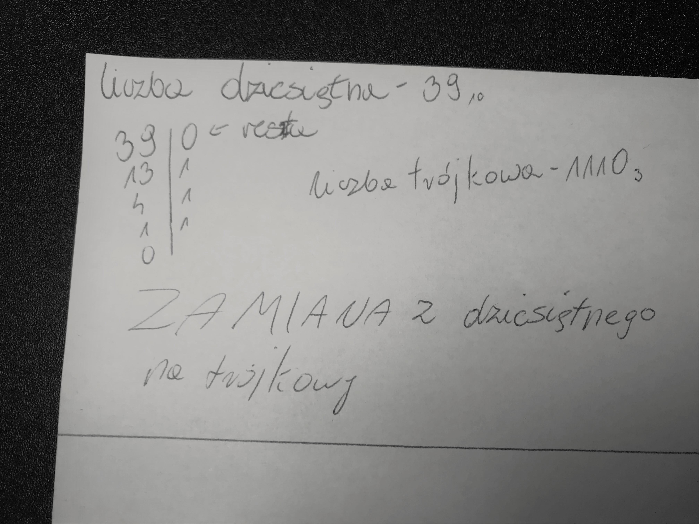

trójkowy
System trójkowy, jak sama nazwa wskazuje, opiera się na trzech cyfrach: 0, 1 i 2. Jego podstawą jest liczba 3.
przeliczanie z dziesiętnego na trójkowy i z powrotem
Aby przeliczyć liczbę dziesiętną na trójkową należy dzielić ją przez 3 i wyznaczać resztę aż do chwili, gdy ta liczba wyniesie 0. Następnie należy zapisać tą resztę od tyłu tak jak na zdjęciu poniżej.
Aby przeliczyć liczbę trójkową na dziesiętną należy znać potęgi liczby 3. Trzeba je rozpisać w ilości takiej, jaka jest ilość cyfr w wybranej liczbie trójkowej, a następnie podstawić pod nie kolejne cyfry wybranej liczby trójkowej. Później należy mnożyc tą potęge i cyfrę podstawioną pod nią i dodawać wyniki. Najlepiej zobrazuje to zdjęcie poniżej.